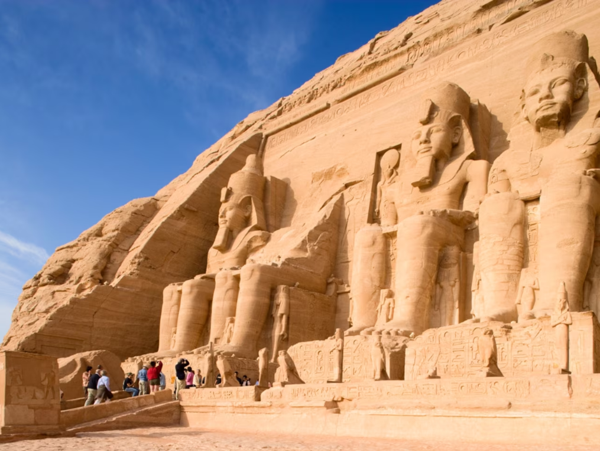

It’s the year 2490 B.C. Wooden boats cruise along the Nile River in Egypt as thousands of workers stack giant stone blocks into a pyramid. This 200-foot-tall structure honors a pharaoh named Menkaure. This pharaoh’s father, Khafre, ordered construction of a 450-foot-high pyramid nearby, and his grandfather Khufu built the Great Pyramid at Giza—the largest of the three—at about 480 feet. Covered in polished white limestone, the pyramids seem to glow in the sunlight.
The Egyptians working on the pyramids are helping create a culture that will last more than 3,000 years—it will be one of the longest-lasting civilizations in the world. During that time, ancient Egyptians created works of art and engineering that still amaze us today.
History of ancient Egypt
People settled in Egypt as early as 6000 B.C. Over time, small villages joined together to become states until two kingdoms emerged: Lower Egypt, which covers the Nile River Delta up to the Mediterranean Sea in the north, and Upper Egypt, which covers the Nile Valley in the south. (The Nile River flows from south to north, so for the ancient Egyptians, the southern part of the country was "up.")
Around 3100 B.C., a king (later called a pharaoh) united these two lands to be one country, and so historians begin the long history of ancient Egypt here, dividing it into different periods. (They don’t always know the exact date of historical events. So that’s why you’ll see a "ca" next to some of the years. It stands for "circa" meaning "around.")
Early Dynastic Period, about 525 years (ca 3100 B.C. to ca 2575 B.C.): These early pharaohs worked to keep the two lands under their control. To do this, they claimed they were being watched over by the falcon god Horus, and so the people of Egypt should respect them. They also used record keeping in the form of hieroglyphic writing to record things like royal decrees and the taxes that the people paid in the form of grain. (A dynasty is a series of rulers from the same family.)
Old Kingdom, about 425 years (ca 2575 B.C. to ca 2150 B.C.): By this time, the pharaohs had enough power and wealth to build pyramids in their honor; that’s why the Old Kingdom is sometimes called the “Age of the Pyramids.” The pharaohs at this time were mostly associated with the sun god Ra, a tradition that would remain for much of Egypt’s history.
First Intermediate Period, about 200 years (ca 2130 B.C. to ca 1938 B.C.): These pharaohs lost power after drought hit Egypt. Instead, local leaders took control of their own communities, and they stopped passing along grain to the central government. Eventually, these local rulers formed independent states.
Middle Kingdom, about 300 years (ca 1938 B.C. to ca 1630 B.C.): Around 1938 B.C., Mentuhotep II reunited the country and began an era known for producing some of Egypt’s greatest pieces of art. For the first time, Egyptians wrote stories for entertainment, and pharaohs started construction of Karnak Temple in the modern-day city of Luxor.
Second Intermediate Period, about 90 years (ca 1630 B.C. to ca 1540 B.C.): Weak pharaohs again lost control. Invaders from western Asia called Hyksos ruled in the north; people from Kush, a kingdom south of Egypt, took control in Upper Egypt.
New Kingdom, about 465 years (ca 1540 B.C. to 1075 B.C.): Egyptians took back control and crowned some of Egypt’s most well-known rulers: The female pharaoh Hatshepsut ruled for 21 years; Akhenaten tried to start a new religion, and his son, the boy king Tutankhamun, reigned for 10 years. Ramses II built more monuments to himself than any other pharaoh. This was ancient Egypt's most prosperous and powerful period.
Third Intermediate Period, about 420 years (ca 1075 B.C. to ca 656 B.C.): This was a time of drought, famine, and foreign invasions. But some pharaohs thrived. Although King Taharqa was a foreign ruler from Kush, a kingdom south of Egypt, he repaired crumbling temples and even began building pyramids again for the first time in about 800 years.
Late Period, about 300 years (ca 656 B.C. to 332 B.C.): This period marks the last time that ancient Egypt was ruled by native Egyptians. Leading an army from Persia (what is now Iran), King Darius I took control.
Macedonian and Ptolemaic Egypt, about 300 years (332 B.C. to 30 B.C.): In 332 B.C., Alexander the Great conquered the ruling Persians, then gave control to the Greek general Ptolemy I Soter. From then on, Egypt was ruled by Greek pharaohs. The last one, Cleopatra VII, lost a war to the Roman ruler Octavian. Egypt would be under Roman rule for the next 600 years.